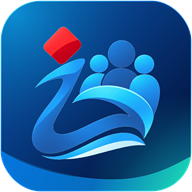

AMAN HRDownload AMAN HR
Get the latest Windows desktop app and see what changed.
Windows 64-bit
Download the ZIP file, extract it, then run the installer.

AMAN HRGet the latest Windows desktop app and see what changed.
Download the ZIP file, extract it, then run the installer.
حمّل أحدث نسخة للعمل على ويندوز واطّلع على ملاحظات الإصدار.
نزّل ملف ZIP، ثم فك الضغط وشغّل المثبّت.